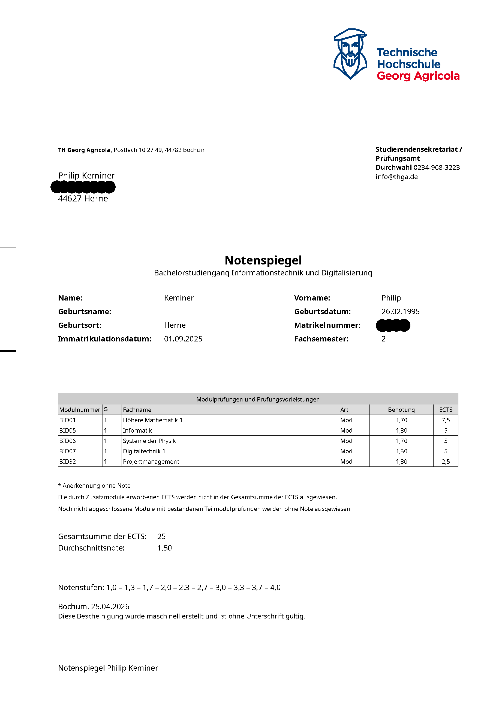

Zum Dokument springen
p-keminer
/
leistungsnachweise
Public
Portfolio
Über mich
Leistungsnachweise
10
Semester & Abschlussarbeiten
1 Dokument
Übersicht
10 Einträge
▣
semester-01
Dokument
□
semester-02
Leer
□
semester-03
Leer
□
semester-04
Leer
□
semester-05
Leer
□
semester-06
Leer
□
semester-07
Leer
□
semester-08
Leer
□
Bachelorarbeit
Leer
□
Masterarbeit
Leer
semester-01 / notenspiegel.pdf
Ansehen ↗
Herunterladen

Noch kein Dokument hinterlegt
Für die Navigation muss JavaScript aktiviert sein.